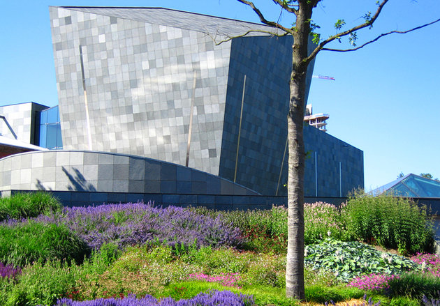

Housed in one of the city's most interesting modern buildings, the Van Abbemuseum is one of the most important galleries of modern art in the Netherlands. Highlights of its more than 2,700 pieces include works by modern painters Marc Chagall and Pablo Picasso and the world's largest collection of material by El Lissitzky. Other notable collections include numerous sculptures and art installations, video works, and posters, including a large Paris collection from Jacqueline de Jong, as well as examples from the USA, Germany, and Eastern Europe. Another attraction of interest is the Kempenland Museum with its displays illustrating the history and culture of the area around Eindhoven, including 19th-century farm life and the textile industry.